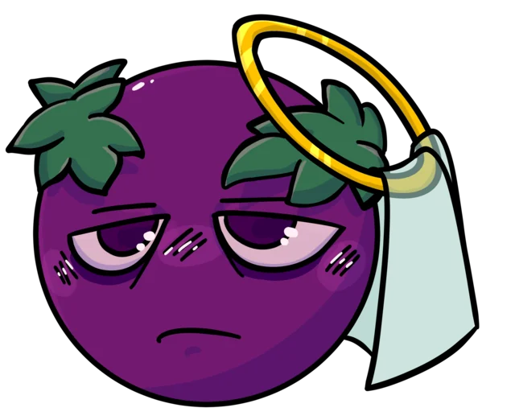

현재 빌드 내부
카르마는 대화보다 더 많은 것을 변화시킵니다.
빛, 중립, 어둠의 카르마 경로는 방어막의 동작, 경고 전조, 적의 공격성, 보스의 페이즈를 바꾸기 때문에 이야기가 곧 플레이 방식을 바꿉니다.
빌드 상태 활발한 제작10개의 대화 세계 모두
열 개 세계 전부의 대화 배경을 Ena부터 Deka까지 내려가는 순서대로 담았습니다.


현재 제작 UI
현재 빌드의 레벨 선택, 대화, 결과 화면.
현재 흐름을 만나는 순서대로 보여 드립니다. 레벨 선택, 대화, 이정표 선택, 그리고 승리 화면 또는 별도의 패배 화면입니다. 아래의 모든 이미지는 제작 중인 Unity 프로젝트의 아트를 사용합니다.
천상의 경로는 100개 레벨의 챕터 10개에서 생성된 레벨을 선택합니다.
제작 메뉴는 100레벨 챕터의 10개 위치를 매핑하고 선택한 실행으로 직접 열립니다.

 201
201대화는 그 지역 안에서 이루어집니다.
캐릭터 초상화, 지역 아트, 화자 이름표가 하나의 세로형 프레임을 공유합니다.


Shash
계속하세요. 하지만 쉬울 거라고 생각하지 마세요. Tria이전의 모든 것을 사소한 일처럼 보이게 만들 여러분을 기다립니다.
04 / 마일스톤 선택
답은 하강의 일부가 됩니다.
로컬 레벨 90과 100에서는 전담 패널이 대화를 통해 실행을 해결하기 전에 예비 또는 살해 결정을 요청합니다.

살려 주기
처치
05 / 결과 메뉴
이기면 다음으로 넘어가고, 지면 같은 도전으로 돌아옵니다.
현재 빌드에는 두 가지 별도의 결과 상태가 있습니다. PanelWin은 재생과 다음 레벨을 제공하는 반면 PanelOver은 틀림없는 재생 작업을 유지합니다.
승리 · PanelWin
하강 완료
 다시 하기
다음
다시 하기
다음
다시 하기
다음
대화 등장인물
내려가는 길에 만난 얼굴들.
유효한 제작 가능 오픈 및 클로즈 초상화 쌍을 갖춘 25개의 캐릭터가 모두 아래에 포함되어 있습니다. 표정을 전환하려면 카드에 마우스를 올리거나 초점을 맞추세요.





게임 개요
Ball is God?!는 회전하는 타워를 따라 떨어져 내려가는 하드코어 아케이드 게임입니다.
아이디어
Espa를 이끌고 신성한 탑을 내려가세요. 한 번의 실수로 플레이가 끝날 수 있고, 중요한 선택이 세계의 플레이 방식을 바꿉니다.
현재 빌드
10개의 로케이션 장면, 절차적 타워 생성, 콤보 스매시, 스와이프 쉴드, 보스 구성, 분기 대화, 제작 메뉴 및 표현 가능한 초상화가 구현됩니다.
추천 대상
어려운 모바일 아케이드 게임, 리스크와 보상이 오가는 타이밍, 보스전을 좋아하고, 따라갈 이야기도 원하는 사람들.
상태
활발히 제작 중입니다. 최근에는 런타임 시스템, 월드 아트, 테스트, 그리고 스마트폰에서의 플레이 느낌을 작업했습니다.
특징
Ball is God?!에서 하는 일
드래그 회전 하강
수평 드래그는 자동으로 떨어지는 Espa 주위로 타워를 회전시켜 틈새, 위험 요소 및 안전한 플랫폼을 정렬합니다.
하드코어 아케이드 압박
방심한 채 한 번 맞으면 그대로 끝나기 때문에, 타워를 읽고 모든 움직임의 타이밍을 맞춰야 합니다.
보스와 신화의 세계
열 개의 지역 장면에는 각각 고유한 보스가 있으며, 이야기를 한 세계에서 다음 세계로 이어 줍니다.
규칙을 바꾸는 선택
자비, 힘 및 카르마 변경 대화, 방패 규칙, 적의 공격성, 전신 및 보스 단계.
게임플레이 루프
Ball is God?! 플레이 방법
- 01단계하강 읽기
떨어지면서 다음 발판, 틈, 위험 요소를 훑어보고 안전한 타이밍을 찾아보세요.
- 02단계타워 회전
수평 드래그는 안전한 플랫폼이나 의도적인 간격을 정렬하여 Espa을 중심으로 세상을 바꿉니다.
- 03단계위험과 스매시
세 개의 플랫폼을 건너뛰고 콤보 스매시를 충전한 다음 방패가 한 번의 치명적인 실수를 덮는 동안 구조물을 돌파하세요.
- 04단계결과 선택
자비와 힘은 적과 보스에게 카르마, 대화, 게임플레이 규칙을 전달합니다.
스토리/세계
내 선택이 끝까지 따라 내려오는 신화의 탑.
Ball is God?!은 모바일 수직 하강 아케이드에 대한 어린 시절의 매력에서 시작되었습니다. 간격을 읽고 빠르게 반응하며 본능적으로 살아남는 것입니다.
이 형식에는 더 많은 것을 담을 수 있었습니다. 보스, 개성 있는 캐릭터, 이야기, 도덕적 긴장감 같은 것들입니다. 현재 프로젝트에서는 Espa가 열 개의 지역 장면과 기묘한 캐릭터들 사이를 지나가며, 선택이 이야기와 플레이를 모두 바꿉니다.
그래서 목표는 보스전의 긴장감과 스토리 중심 RPG의 결과가 어우러진 단순한 수직 하강 아케이드가 되었습니다.
- 비전
- 신화 이야기를 품은 회전 타워 아케이드
- 현재 세계 범위
- 10곳의 장소와 보스 구성
- 스토리 스테이지
- 장편 스토리 초안 완성
- 제작 상태
- 활발한 제작
한눈에 보기
간단한 드래그 조작, 그리고 규칙을 바꾸는 이야기.
드래그해서 돌리는 조작은 즉각 반응합니다. 나머지 재미는 신화의 세계, 보스, 플레이를 바꾸는 선택에서 나옵니다.
현재 빌드에는 이미 결정론적 타워 생성, 리스크와 보상이 맞물리는 스매시, 일격 실패, 보스, 분기형 대화, 게임플레이를 바꾸는 카르마가 함께 들어 있습니다.
- 장르
- 스토리 중심의 수직 하강 아케이드
- 목표 플랫폼
- iOS / Android
- 플레이 형태
- 빠른 실력 기반 플레이
- 스튜디오
- WillowinWorlds
에셋 다운로드
Ball is God?! 언론 및 창작자 에셋
보도, 퍼블리셔 검토, 스토어 페이지 참고용 WebP 프리뷰입니다. 원본 해상도의 소스 파일은 요청 시 제공합니다.
브랜드 및 캐릭터
게임 아이콘과 완전한 제작 대화 초상화를 보유한 현재 캐릭터 25명 모두. 이름은 Unity 현지화 키와 일치합니다.
Espa플레이어 캐릭터 초상화.
Revla제작용 대화 초상화.
Shash제작용 대화 초상화.
Shush제작용 대화 초상화.
Shish제작용 대화 초상화.
Gigo제작용 대화 초상화.
Goga제작용 대화 초상화.
Giga제작용 대화 초상화.
Askold제작용 대화 초상화.
Miras제작용 대화 초상화.
Hih제작용 대화 초상화.
Heh제작용 대화 초상화.
Hah제작용 대화 초상화.
Musya제작용 대화 초상화.
Dusya제작용 대화 초상화.
Susya제작용 대화 초상화.
Vladus제작용 대화 초상화.
Frisha제작용 대화 초상화.
Luren제작용 대화 초상화.
Kuren제작용 대화 초상화.
Don Yagon제작용 대화 초상화.
Lurya제작용 대화 초상화.
Khleya제작용 대화 초상화.
Varon제작용 대화 초상화.
White제작용 대화 초상화.
메뉴 배경
현재 제작 중인 작품은 천체 수준 선택 시스템에 사용됩니다.
 천상의 메뉴
천상의 메뉴수직 하강 세계
Ena부터 Deka까지 주문된 10개의 현재 위치 배경 전체 세트입니다.
 01 · 스카이월드Ena 수직 하강 배경.
01 · 스카이월드Ena 수직 하강 배경.
 02 · 우주 세계Dyo 수직 하강 배경.
02 · 우주 세계Dyo 수직 하강 배경.
 03 · 폭풍의 세계Tria 수직 하강 배경.
03 · 폭풍의 세계Tria 수직 하강 배경.
 04 · 눈의 세계Tessera 수직 하강 배경.
04 · 눈의 세계Tessera 수직 하강 배경.
 05 · 화산 세계Pente 배경; 게임 내 애니메이션.
05 · 화산 세계Pente 배경; 게임 내 애니메이션.
 06 · 바다 세계Eksi 수직 하강 배경.
06 · 바다 세계Eksi 수직 하강 배경.
 07 · 사막의 세계Epta 수직 하강 배경.
07 · 사막의 세계Epta 수직 하강 배경.
 08 · 숲의 세계Ohto 수직 하강 배경.
08 · 숲의 세계Ohto 수직 하강 배경.
 09 · 동굴 세계Ennea 수직 하강 배경.
09 · 동굴 세계Ennea 수직 하강 배경.
 10 · 지옥 세계Deka 수직 하강 배경.
10 · 지옥 세계Deka 수직 하강 배경.
스토리 아케이드 배경
완전한 대화 위치 세트: 빛의 전당과 10개 세계 모두의 배경.
 00 · 빛의 전당
00 · 빛의 전당 01 · 하늘 대화
01 · 하늘 대화 02 · 우주의 대화
02 · 우주의 대화 03 · 폭풍 대화
03 · 폭풍 대화 04 · 눈의 대화
04 · 눈의 대화 05 · 화산 대화
05 · 화산 대화 06 · 바다의 대화
06 · 바다의 대화 07 · 사막의 대화
07 · 사막의 대화 08 · 숲의 대화
08 · 숲의 대화 09 · 동굴 대화
09 · 동굴 대화 10 · 지옥 대화
10 · 지옥 대화Ball is God?! FAQ
Ball is God?!에 대한 자주 묻는 질문
Ball is God?!은 어떤 게임인가요?
하드코어 수직 하강 아케이드입니다. 떨어지는 Espa를 중심으로 타워를 돌리고, 안전한 착지를 건너뛰어 스매시를 충전하며 신화의 세계를 뚫고 나아갑니다.
Ball is God?!는 어떻게 플레이하나요?
수평으로 드래그하여 타워를 회전시키고, 세 개의 플랫폼을 건너뛰어 스매시를 충전하고, 재사용 대기시간 보호막이 치명적인 타격을 흡수해야 할 때 수직으로 스와이프하세요.
Ball is God?!는 이미 출시되었나요?
아직 출시되지 않았습니다. 런타임 시스템, 월드 아트, 스토리 콘텐츠, 테스트 전반에 걸쳐 활발히 제작 중입니다. 공개 출시일은 정해지지 않았습니다. 대상 플랫폼은 iOS와 Android입니다.
Ball is God?!는 무엇이 다른가요?
리스크와 보상이 맞물리는 아케이드의 긴장감에 열 개 지역, 그리고 대화, 적, 공격 전조, 방어막, 보스를 바꾸는 카르마가 더해졌습니다.
Ball is God?!는 누가 만드나요?
WillowinWorlds는 모바일 퍼즐·아케이드 게임을 만드는 독립 스튜디오입니다.
Ball is God?! 프레스 에셋을 사용해도 되나요?
네, 보도, 퍼블리셔 검토, 스토어 참고용으로 사용하실 수 있습니다. 소스 파일은 요청하지 않으시면 공개하지 않습니다.
Ball is God?! 개발로그
변경된 내용과 시기
- 월드 표면 및 위험 요소 검증
캐릭터 연출, 결정론적 생성, 가시 함정에 대해 시각 점검과 검증 작업을 함께 진행했습니다.
- 2026년 7월제작용 UI와 캐릭터 정비
레벨 선택, 공통 액션 조작, 세로형 대화 프레임, 짝을 이루는 캐릭터 표정이 이제 갖춰졌습니다.
- 2026년 2월프로젝트 범위 검토
팀은 주요 스토리 통합 패스를 완료하고 프로젝트의 전체 규모(10개의 세계, 도덕적 선택, 보스 및 다중 엔딩)를 검토했습니다.
- 2025년 4월~5월스토리 재작성 및 능력
전체 스토리가 재작성되고 캐릭터 능력이 향상되었으며 도덕적 결과가 더욱 명확해졌습니다.
- 2024년 8월스토리 연출이 시작됩니다
팀은 Ball is God?!가 단순한 아케이드 하강 게임에 그쳐서는 안 된다고 판단해, 신화적인 이야기와 도덕적 선택이라는 비전을 더했습니다.
- 2024년 7월오리지널 컨셉
이 프로젝트는 스튜디오의 첫 게임 아이디어로 시작되었습니다. 신성한 탑을 따라 떨어져 내려가는 빠른 수직 아케이드 게임이었습니다.
- 현재 빌드아케이드와 스토리를 한 빌드에
회전 타워 하강, 콤보 스매시, 스와이프 방어막, 보스, 대화, 카르마가 이제 하나의 빌드에서 함께 작동합니다.